童伟(Kevin W. Tong)
 |
童伟 |
关于我
研究方向：
- 3D机器人视觉
- 高精度三维场景重建
- 6D位姿估计
- 人因工程
- 医学图像处理与分析
- 脑疾病诊断
- 脑认知科学
代表作论文
| 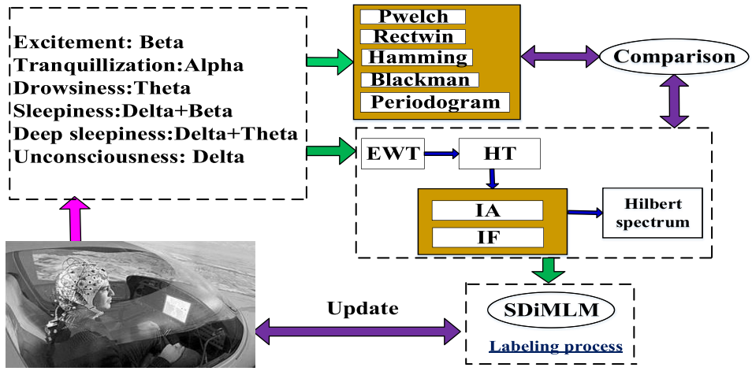 |
Normal Assisted Pixel-Visibility Learning With Cost Aggregation for Multiview Stereo. |
| 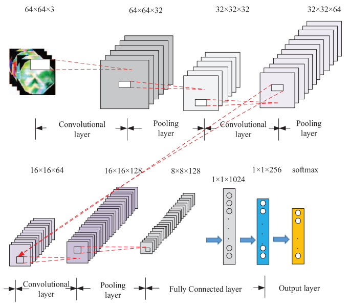 |
Multistage Pixel-Visibility Learning With Cost Regularization for Multiview Stereo. |
| 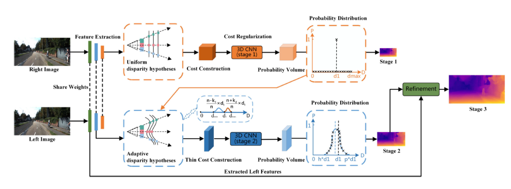 |
Adaptive Cost Volume Representation for Unsupervised High-resolution Stereo Matching. |
| 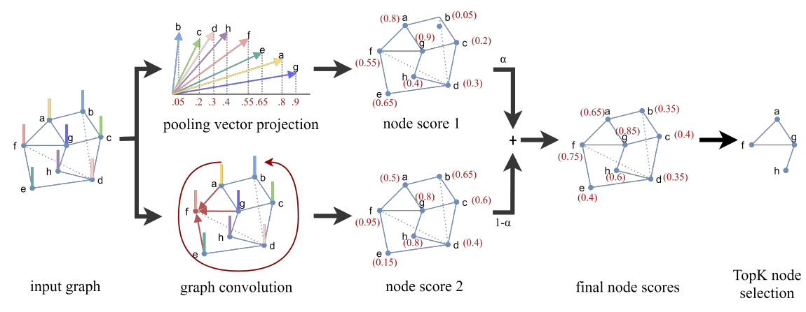 |
fMRI-based Brain Disease Diagnosis: A Graph Network Approach. |
| 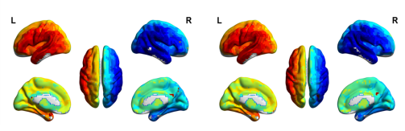 |
Individual-level fMRI Segmentation Based on Graphs. |
| 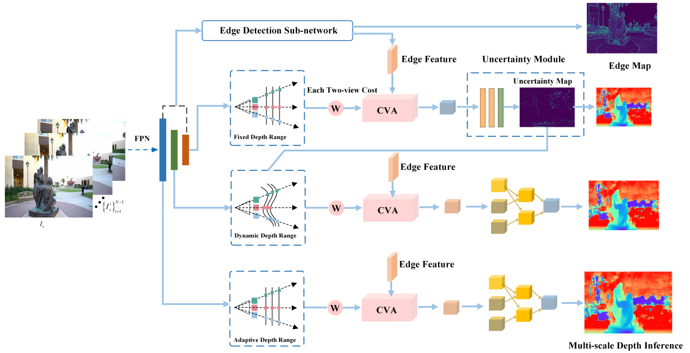 |
Edge-Assisted Epipolar Transformer for Industrial Scene Reconstruction. |
| 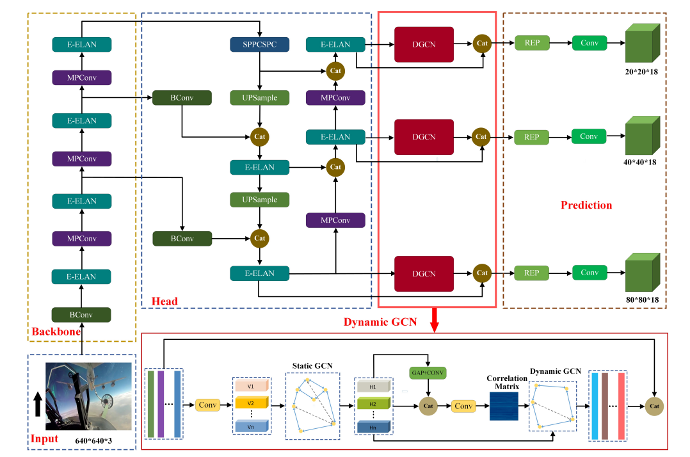 |
Robust Drogue Positioning System Based on Detection and Tracking for Autonomous Aerial Refueling of UAVs |
| 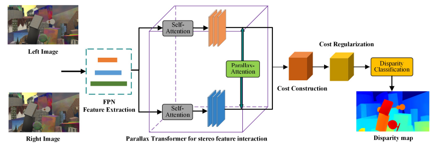 |
Robust Depth Estimation Based on Parallax Attention for Aerial Scene Perception. |
| 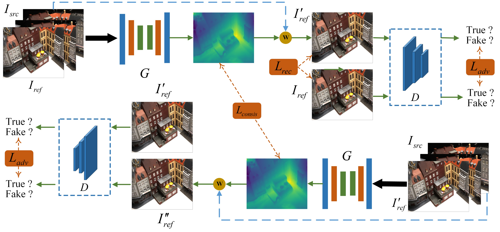 |
Self-supervised Multiview Scene Reconstruction via Cycled GAN. |
| 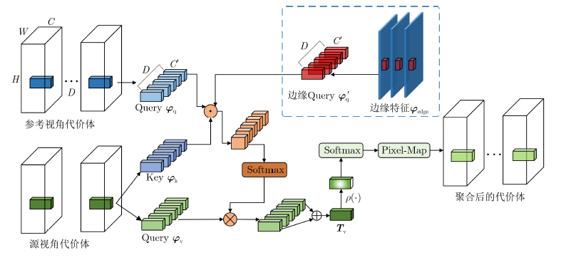 |
Multiview Scene Reconstruction Based on Edge Assisted Epipolar Transformer. |
| 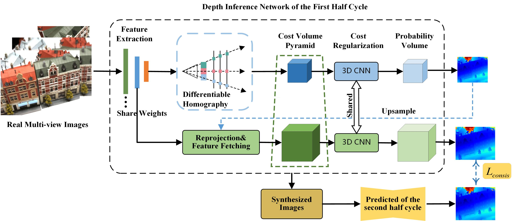 |
Self-supervised Depth Estimation Based on the Consistency of Synthetic-real Image Prediction. |
| 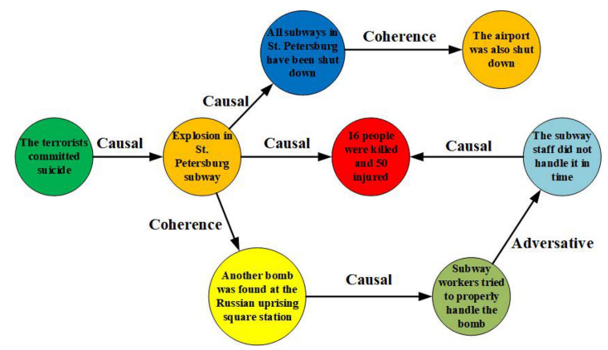 |
URRNet: A Unified Relational Reasoning Network for Vehicle Re-identification. |
 |
Anticipation Video Captioning of Aerial Refueling Based on Combined Attention Masking Mechanism. |
| 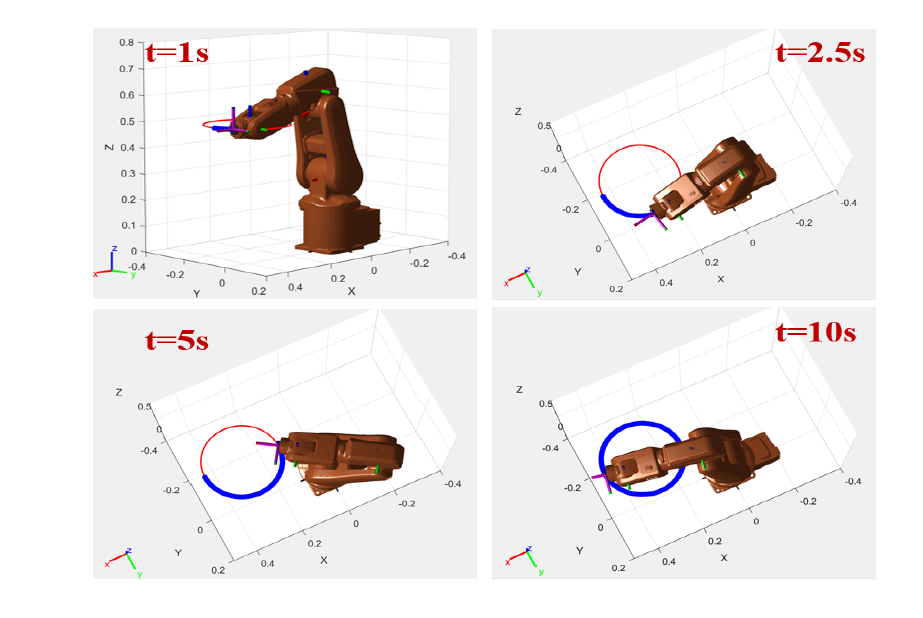 |
Robust Neural Dynamics Method for Redundant Robot Manipulator Control with Physical Constraints. |
|
Chat with ChatGPT on Interactive Engines for Intelligent Driving. |
|
| 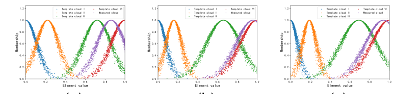 |
Anti-disturbance path-following control for snake robots with spiral motion. |
| 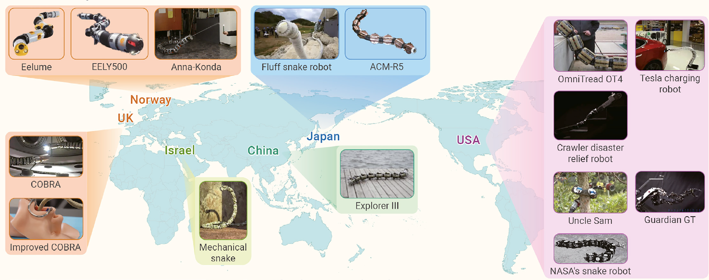 |
Snake robots play an important role in social services and military needs. |
项目资助
国家基金委项目：
国家自然科学民航联合基金、U1933125、飞行员视觉刺激-脑疲劳认知响应耦合机理研究、2020-01至2022-12、进行中、参与.
国家自然科学基金面上项目、62171274、空战对抗过程中的飞行员视觉、操作力与脑认知耦合机理研究、2022-01至2025-12、进行中、参与.
国家自然科学叶企孙联合重点项目、U2241228、空战博弈对抗下的飞行员视觉-脑认知-操作力反馈增强交互机理研究、2023-01至2026-12、进行中、参与.
其他项目:
某重大型号任务、重大型号编队空中**项目、进行中，负责.
民航基金项目、飞行员生理疲劳周期预测、进行中，负责.
中央某委装备预研重点实验室基金项目、飞行员视觉刺激-脑疲劳认知响应关联技术研究、2020-01至2021-12、进行中、参与.
中央某委GF创新特区项目、基于视觉反馈的飞行员感知认知技术研究-面向典型任务场景的飞行员生理认知综合分析模型研究、2020-12至2022-12、进行中、参与.
上海脑计划、脑机接口算法研究、2022-01至2024-12、进行中、参与.
空军医学重大专项，航空医学重大问题提升飞行人员作战效能、2022-01至2024-12、进行中、参与.
专利:
- 侯玉宏，吴奇，李萍，童伟，何睿杰，基于生物数学模型的飞行员警觉性计算模型、申请号： 202310228963.6.
- 吴奇，侯玉宏，朱广宇，高毓兵，童伟， 一种基于预设规则的航空事故报告双语检索方法、申请号：202310212592.2.
社会服务
期刊审稿
- IEEE Transactions on Intelligent Transportation Systems (T-ITS)
- IEEE Transactions on Intelligent Vehicles (T-IV)
- IEEE Transactions on Cognitive and Developmental Systems (T-CDS)
- IEEE Transactions on Systems, Man, and Cybernetics: Systems (T-SMCA)
- IEEE Transactions on Computational Social Systems (T-CSS)
- IEEE Transactions on Big Data (T-BD)
- IEEE Transactions on Automation Science and Engineering (T-ASE)
- IEEE Transactions on Medical Robotics and Bionics
- Neural Computing and Applications
- Journal of Electronics & Information Technology
- IEEE Access
会议审稿:
- International Conference on Mechanical, Electric and Industrial Engineering, 2023
- IEEE International Conference on Intelligent Transportation Systems, 2022
- IEEE International Conference on Intelligent Robotics and Applications, 2022 (担任Session Chair)